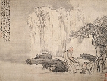

Čína za vlády dynastie Tchang
Chao Meng-fu
|
ČÍNA
 Jako každá velmoc má i Čína ve své historii šťastné a smutné stránky. K těm lepším patří duchovní tradice, ze které čerpal taoismus i konfucianismus. V Číně vznikla nádherná umělecká díla (stavby, sochy, kresby, literatura). Čína dala světu mnoho vynálezů – kompas, papír, hedvábí atd. Je pravlastí bojových umění. Její obyvatelé vybudovali největší stavbu světa, která je dokonce vidět z oběžné dráhy Země – Velkou čínskou zeď. Na druhé straně obrovské území i počet obyvatel vyžadoval přísnou organizaci, která z Číny utvořila úřednický stát. Obyvatelé tak byli častokrát vydáni na milost a nemilost státnímu aparátu.
Nejtěžší období potkalo Číňany po vítězství komunistické ideologie. Za vlády Mao Ce-tunga a jeho nástupců přišlo o život 80 milionů obyvatel a řada kulturních památek byla nenávratně zničena.
Jako každá velmoc má i Čína ve své historii šťastné a smutné stránky. K těm lepším patří duchovní tradice, ze které čerpal taoismus i konfucianismus. V Číně vznikla nádherná umělecká díla (stavby, sochy, kresby, literatura). Čína dala světu mnoho vynálezů – kompas, papír, hedvábí atd. Je pravlastí bojových umění. Její obyvatelé vybudovali největší stavbu světa, která je dokonce vidět z oběžné dráhy Země – Velkou čínskou zeď. Na druhé straně obrovské území i počet obyvatel vyžadoval přísnou organizaci, která z Číny utvořila úřednický stát. Obyvatelé tak byli častokrát vydáni na milost a nemilost státnímu aparátu.
Nejtěžší období potkalo Číňany po vítězství komunistické ideologie. Za vlády Mao Ce-tunga a jeho nástupců přišlo o život 80 milionů obyvatel a řada kulturních památek byla nenávratně zničena.

Tang Jin: Pití čaje
|
Historie
Dějiny Číny tvoří období pojmenovaná podle vládnoucích dynastií. Legendy umísťují jejich počátky až do 3. tis. př.n.l. Nejvýznamnějšími dynastiemi byly Šang (16. stol. až 1027 př.n.l.), Čou (1027-256 př.n.l.), Chan (206 př.nl. – 220 n.l.), Tchang (618-907 n.l.) a Sung (960-1279 n.l.), kterou vystřídala mongolská dynastie Jüan (1279-1368 n.l.), dále Ming (1368-1644 n.l.) a Čching (1644-1911) nazývaná též Mandžuská dynastie. V letech 1271-95 podnikl svou cestu do Číny Marco Polo a od 16. stol. sem pronikají první evropští kolonisté (portugalské Macao, opiové války s Anglií…). V roce 1912 byla vyhlášena Čínská republika, ve které vládnou od roku 1949 komunisté.
|

Základním textem taoismu je Lao-c’ neboli Tao-te-ťing. Přeložit tento název není jednoduché, vždyť už její první verše znějí následovně: „Tao, které lze postihnout slovy, /
není věčné a neměnné tao; / jméno, které lze pojmenovat, / není věčné a neměnné jméno“. Významný český sinolog Oldřich Král titul překládá O Cestě Tao a její Síle, jiné překlady znějí Kniha o cestě a její síle nebo Kniha o tao a ctnosti. Podle tradice je jejím autorem Lao Tan, hlavní archivář císařského dvora. Ten se po mnoha letech služby rozhodl odjet na vodním buvolu do hor. Při jednom zastavení napsal 81 kapitol svého díla, díky němuž se stal nesmrtelným. Lao-c’ bývá nazýván Starým Mistrem, protože byl starším současníkem Konfucia.
|
Taoismus
Podstatou taoistického náhledu na svět je přesvědčení, že by člověk neměl zasahovat do věcí, které samy fungují přirozenou cestou. Taoisté hlásají návrat k přírodě a k prostému životu. Neuznávají světské pocty a ctižádostivost. Nevěří na posmrtný život, a proto je jejich hlavním cílem dosažení dlouhověkosti. Pro tento účel vypracovali taoisté systém meditací, cvičení (tchaj-ťi) a zdravého stravování.
Ve 2. stol. př.n.l. se z taoistické filozofie stává náboženství. Původní učení o tao jako o základním nepostižitelném principu všech věcí je doplněno příběhy o bozích a démonech. Na nebesích vládne Nefritový císař, jehož dvůr je velmi podobný dvoru skutečného čínského císaře. V taoismu mají svého boha nejen přírodní úkazy nebo města, ale také květiny, světové strany, a dokonce i příkopy nebo zdi. Rodinný život chrání Pán domácího krbu.
Taoistický kánon (Tao-cang) zahrnuje 5318 svitků, nejdůležitějším z nich ale zůstává Tao-te-ťing. Údaje o stáří tohoto spisu se různí (6. až 3. stol. př.n.l.)
K taoismu se hlásil také Mistr Čuang Čou (369–286 př.n.l.), autor tohoto podobenství:
|
Zdálo se Čuangovi, že je motýl, jenž poletuje kolem, motýl se cítil motýlem, nic mu nechybělo, nevěděl, že je Čuang. Náhle se probudil a ustrnul, je Čuang! A teď neví, zdálo se Čuangovi, že je motýl, nebo se zdá nyní motýlu, že je Čuang? Čuang nebo motýl, přece tu musí být nějaký rozdíl! A tomu se říká proměnlivost věcí!
|
|
Jin a jang
Taoismus převzal starší učení o jednotě protikladných sil jin a jang. Jelikož je tao základem všech věcí, jsou jin (ženský princip) i jang (mužský princip) pouze jeho projevy. Číňané vypracovali podrobnou klasifikaci všech jevů, podle které jang (sluneční strana hory) symbolizuje pohyb, světlo, teplo, život, nebesa atd. Jin (zastíněná strana hory) zase věci i jevy opačné. Oba principy od sebe nelze oddělit, tak jako neexistuje stín bez slunce. Jedno je obsaženo v druhém. Pokud je něco příliš jang, mění se v jin a naopak. Tato jednota je symbolicky vyjádřena ve známém kruhovém obrazci.

Symbol jednoty jin a jang obklopený trigramy z Knihy proměn (I-ťing)
Zdál se ti v poslední době nějaký zajímavý sen? Zkus ho převyprávět a vyložit.
Nakresli ilustraci k Čuangovu snu.
|
Konfucius (552-479 př.n.l.) viděl ideál ve společnosti založené na dodržování společenských norem, zákonů a úctě k tradicím. Cílem konfucianismu bylo sladění potřeb individua a státu. Významným požadavkem byla poslušnost vůči starším a nadřízeným.
Šíření konfucianismu
Z Číny se konfucianismus rozšířil do Vietnamu, Korey a Japonska.
Které učení je ti bližší? Taoismus nebo konfucianismus? Proč?
|
Konfucius: Hovory
Když se Jen Chuej zeptal na definici Dokonalého Lidství, Mistr odpověděl:
„Podmanění sebe sama a návrat k dodržování předpisů vytváří Dokonalé Lidství. Jestliže během jednoho dne dosáhnete sebekontroly, okolí vás uzná jako Dokonalého Člověka. Dosažení Dokonalého Lidství musí přijít z vás samých, člověk ho nemůže získat od jiných."
„Jaké jsou složky sebeovládání a co představuje návrat k předpisům?"
„Nehledejte a nekonejte nic, co není v souladu s předpisy; nedívejte se na nic takového, ani tomu nenaslouchejte."
„Nejsem příliš pilný, ale to, co jste řekl, je přesně to, co hodlám udělat."
|
Konfucius (latinská podoba jména Kchung fu-c´ – Mistr z rodu Kchung) byl velmi vzdělaný muž a působil jako učitel. Shromáždil kolem sebe žáky, aby z nich vychoval Dokonalé Muže, kteří by svým příkladným jednáním postupně změnili celou společnost. Konfucius (552-479 př.n.l.) totiž žil v těžké době zmítané válkami. Za vlády dynastie Čou byla Čína rozdrobena mezi řadu knížectví a moc císaře byla velmi slabá. Konfucius se chtěl stát významným úředníkem a vše napravit, ale císař mu to neumožnil. Slavný učenec byl považován spíše za ozdobu dvora a za svého života oficiálního uznání nedosáhl. Jeho žáci sepsali Konfuciovo učení do knihy Hovory (Lun-jü neboli Vybraná čtení).
Konfucianismus
Konfuciovi žáci neměli snadný život, protože stejně jako jejich učitel požadovali po císaři, aby byl Dokonalým Člověkem, který pečuje o blaho svých poddaných. Dokonce se objevily i názory, že špatný vládce může být svržen! Tak se stalo, že tzv. První císař nechal v roce 213 př.n.l. několik set konfuciánců zaživa pohřbít a spálil všechny jejich knihy. Až s nástupem nové dynastie Chan dosáhli Konfuciovi pokračovatelé toho, oč usiloval jejich Mistr. Roku 136 př.n.l. se stal konfucianismus státním náboženstvím. V hlavním městě Číny vznikla univerzita, kde budoucí úředníci studovali Klasické knihy a Konfuciovy spisy. Postupně se ujal systém státních zkoušek, který umožňoval úředníkům služební postup.
|
Klasické knihy
Legendy připisují Konfuciovi autorství tzv. Klasických knih, pravdou ale bude pouze to, že tyto knihy pečlivě studoval a vedl k tomu i své žáky. Jde o 5 textů – Kniha písní, Kniha proměn, Kniha obřadů, Kniha dokumentů a Letopisy jara a podzimu. Kniha písní (Š'-ťing) je sbírkou poezie. Kniha proměn (I-ťing) je věštecký text, který nabízí postup, jak předpovídat různé události rozhozením tří mincí. Každému hodu odpovídá jeden trigram (tři přerušované nebo plné čáry). Takových trigramů je celkem 8 a reprezentují různé živly (země, nebe, oheň, vítr atd.). Jejich spojením vznikne 64 hexagramů, jejichž význam je detailně popsán v této knize. Kniha obřadů (Li-ťing) je velmi různorodá. Popisuje správní systém v Číně a vedle vládních nařízení obsahuje i návody na vedení domácnosti (včetně kuchařských receptů), výběr vhodného jména pro novorozence, pravidla společenského chování atd. Kniha dokumentů (Šu-ťing) líčí čínské dějiny. Začíná vypravováním o legendárních císařích a prvních historických dynastiích a pokračuje až do doby Čou. Letopisy jara a podzimu jsou kronikou státu Lu (722-481 př.n.l.), ve kterém se narodil i Konfucius.
|
Li Po (710-762 n.l.)

Tu Fu (712-770 n.l.)
Byl Li Po opilec? Proč o něm Tu Fu napsal báseň?
|
Li Po
Básník Li Po (710-762 n.l.) proslul hlavně svými bezstarostnými pijáckými verši. Jeden čas se stal dokonce dvorním básníkem císaře, ale kvůli intrikám musel z paláce odejít. Od té doby se potuloval krajinou od jedné krčmy ke druhé, kde mu díky císařskému dekretu museli vždy nalít zdarma...
Tu Fu: Čtyřverší na Li Po
U džbánku vína Li sto básní napíše,
noc dospí v hospodě, když měsíc dozáří.
Císař pán pozve jej, Li s díky odmítá:
– Jsem přece vína bůh, ó pane císaři!
|
|
Kniha písní (Š’-ťing)
Kniha písní (11. až 6. stol. př.n.l.) neboli Š’-ťing je nejstarší sbírkou čínské poezie a obsahuje více než 300 básní. Původně šlo o hymny, ódy a dvorské i lidové písně, ale jejich nápěvy se nedochovaly. Námětem skladeb bývá čínská mytologie a historie, cyklus zemědělských prací i obyčejný život (láska, svatba, vojna atd.).

Ma Jüan: Mladá vrba a vzálené pohoří
|
Opičí král a Tripitaka
Námětem knihy Vyprávění o putování na západ byla skutečná cesta buddhistického mnicha Süan-canga (přezdívaného Tripitaka podle stejnojmenného buddhistického kánonu) pro sútry do Indie. Podnikl ji v letech 629 až 645 a pečlivě svou cestu popsal ve vlastních zápiscích. Při této náročné výpravě musel překročit poušť Gobi a pohoří Hindukúš. Šest set buddhistických textů, které donesl do Číny, potom překládal se svými žáky. Tripitakův počin zaujal lidové vypravěče, kteří skutečný příběh okořenili řadou fantastických prvků. V těchto vyprávěních je postava mnicha Tripitaky zastíněna kousky Opičího krále Sun Wu-kchunga.
Opičí král (pekingská opera)
|
Vyprávění o putování na západ
Autorem fantastického románu Vyprávění o putování na západ (Si-jou-ťi) byl Wu Čcheng-en (1500-1582), ale příběh o přenesení buddhismu z Indie do Číny se tradoval dlouho předtím. Kniha má 1100 stran a obsahuje tři části – první popisuje zrození Opičáka a jeho vzpouru proti nebi, druhá vypráví, jak tchangský císař navštívil podsvětí a teprve třetí zachycuje putování za posvátnými buddhistickými spisy.
Hlavní postavou je Opičák Sun Wu-kchung, který se zrodil z kamene. Naučil se mnohým kouzlům, získal nesmrtelnost, ale chtěl mnohem víc. Začal si říkat Velký světec rovný nebi a porušoval jeden zákon za druhým. Ani Nefritový císař (nejvyšší bůh a panovník nebes) si s ním nevěděl rady. Opičí král porazil nebeská vojska a hrozil zničením nebes. Zkrotí ho až Nejvyšší Buddha, který Opičáka zavalí horou.
Opičího krále vysvobodil mnich Tripitaka, který byl vybrán, aby přinesl posvátná písma ze Západního ráje. Bohové mu poskytli několik ochránců – Opičáka, Čuníka a Písečného mnicha. Tito poutníci musejí překonat řadu nesnází, které způsobí buď sám Opičí král svou umíněností a drzostí, nebo jim je nastraží zlí démoni. Lstivý Opičák ale vždycky své druhy zachrání. Nakonec překonají i největší překážku Ohňovou horu a dorazí do Západního ráje, odkud si odnesou posvátná písma.
|
Čínský buddhismus
Buddhismus začal do Číny pronikat v 1. stol. n.l., ale pravý rozkvět nastává až v nejisté době mezi pádem dynastie Chan a nástupem dynastie Tchang, tj. ve 4. až 7. stol. n.l. Těžkou ránu zasadilo tomuto náboženství zavření buddhistických klášterů, které nařídil císař v roce 845.
Indické buddhistické stúpy dostaly v Číně zvláštní podobu. Těmto stupňovitým stavbám říkáme pagody. Také zobrazování Buddhy bylo značně odlišné.

|
Kaligrafie

|
Jazyk a písmo
Ve starověké Číně se pro psanou literaturu používal jazyk wen-jen. Čínština se od evropských jazyků v mnohém liší. Obsahuje především jednoslabičná slova, jejichž význam se mnohdy rozlišuje různou výslovností stejné samohlásky (záleží na tónu, jakým se „zazpívá"). Čínština nezná gramatické kategorie jako číslo, rod, čas a někdy bývá těžké rozlišit i slovní druhy. Tyto vlastnosti čínštiny ztěžují práci především překladatelům.
Nejstarší doklady čínského písma pocházejí z 2. tis. př.n.l. a jde o nápisy na želvích krunýřích. Za vlády dynastie Chan se ustálil složitý systém obrázkového písma, kde každý znak odpovídá jinému slovu (slabice). Slova, která se stejně vyslovují, se tedy píší jinak! Gramotný člověk musí ovládat minimálně 4000 znaků, existuje jich však mnohem více – 40 000. Píše se buď shora dolů, nebo zprava doleva, od roku 1956 také „evropsky" zleva doprava.
Číňané jednotlivé znaky vlastně malují. Pomocí štětce nanášejí na papír černou tuž. Od tohoto způsobu psaní je jenom kousek ke kaligrafii a tušové malbě. Není divu, že se mnozí čínští spisovatelé zároveň věnovali výtvarnému umění.
|
Systém písma

Různé čínské znaky s podobnou výslovností a zcela odlišnými významy
|
Výroba papíru
Výroba papíru na japonské ilustraci
|
Vynález papíru a tisku
 Papír vynalezl Cchaj Lun v roce 105 n.l. K jeho výrobě používal staré rozdrcené látky, především hedvábí. Rostlinná vlákna se začala používat až mnohem později. Číňané si tento vynález střežili jako oko v hlavě, ale v 7. stol. začal pronikat do Japonska a v 8. stol. získali návod na výrobu papíru Arabové. Do Evropy se jejich prostřednictvím dostal až v roce 1154, kdy byla postavena ve Španělsku první papírna.
Také tisk je čínským vynálezem. Buddhističtí mniši chtěli rychleji šířit své spisy, a proto je vyřezali do dřevěných desek. První takto tištěná kniha pochází z roku 868 n.l. Od 10. století se začaly vyřezávat i jednotlivé znaky. V Číně se dochoval kompletní buddhistický kánon na kamenných deskách.
Papír vynalezl Cchaj Lun v roce 105 n.l. K jeho výrobě používal staré rozdrcené látky, především hedvábí. Rostlinná vlákna se začala používat až mnohem později. Číňané si tento vynález střežili jako oko v hlavě, ale v 7. stol. začal pronikat do Japonska a v 8. stol. získali návod na výrobu papíru Arabové. Do Evropy se jejich prostřednictvím dostal až v roce 1154, kdy byla postavena ve Španělsku první papírna.
Také tisk je čínským vynálezem. Buddhističtí mniši chtěli rychleji šířit své spisy, a proto je vyřezali do dřevěných desek. První takto tištěná kniha pochází z roku 868 n.l. Od 10. století se začaly vyřezávat i jednotlivé znaky. V Číně se dochoval kompletní buddhistický kánon na kamenných deskách.
Další díla a autoři
Čchü Jüan (první čínský básník)
Wang Wej (malíř a básník)
Jung-le ta-tien (encyklopedie z roku 1407)
|

Chang Šen: Učitel a žák

Čínská krajina
|
Internetové stránky
Čínská poezie, Mathesiovy převody
Tao te ťing
I-ťing, předpovídání budoucnosti podle Knihy proměn
Čínské umění, stručný přehled
Classic Chinese Paintings
Traditional Chinese Painting
Gallery of China
Malíři dynastie Sung
Čínská malba
Bambus
|
Doporučená četba
Bondy, Egon: Čínská filosofie, Praha 1992
Cchao Süe-čchin: Sen v červeném domě (3 svazky), Odeon 1986
Hartzová, Paula R.: Taoismus, přel. S.Vomáčková, NLN, Praha 1996
Hoobler, Thomas a Dorothy: Konfucianismus, přel. P.Jeřábková, NLN, Praha 1997
Hrdličková, V.: Dějiny čínské klasické literatury, Praha 1980
Chuej-neng: Tribunová sútra šestého patriarchy, přel. O.Král, Odeon, Praha 1988
Chung Li: Čínská astrologie, přel. A.Adámek, Volvox globator, Praha 1999
I-ťing, Kniha proměn, přel. O.Král, Praha 1995
Konfucius: Rozpravy, přel. Lesný, Průšek, Praha 1996
Lao-c´: Tao te ťing, přel. O.Krebsová, DharmaGaia, Praha 1997
Li Po: Měsíc nad průsmykem, přel. M.Ryšavá, Odeon, Praha 1977
Liu Xie: Duch básnictví řezaný do draků, přel. O.Král, Brody, Praha 2000
Mathesius, Bohumil: Zpěvy staré Číny, SNKLHU, Praha 1957
Mistr Čuang: Vnitřní kapitoly, přel. O.Král, Odeon, Praha 1992
Perlový závěs, Poezie staré Číny, přel. F.Stočes, Mladá fronta, Praha 1994
Podivuhodné příběhy z čínských tržišť a bazarů, přel. J.Průšek, Odeon 1991
Po Ťü-i: Datlovník v meruňkovém sadu, přel. Kolmaš, Štroblová, Vyšehrad, Praha 1996
Průšek, Jaroslav: O čínském písemnictví a vzdělanosti, Družstevní práce, Praha 1947
Starožitné zrcadlo, Příběhy z doby Tchangů, Odeon, Praha 1977
Süan-cang: Zápisky o západních krajinách za Velkých Tchangů, přel. J.Kolmaš, Academia, Praha 2002
Tao, Texty staré Číny, přel. O.Král, Praha 1971 (2.vydání z roku 1994 má název Kniha mlčení)
Wu Čcheng-en: Opičí král, Vyprávění o putování na západ, přel. Z.Heřmanová-Novotná, Albatros, Praha 1997
Wu Ting-c’: Literáti a mandaríni, Neoficiální kronika konfuciánů, přel. O.Král, Votobia, Olomouc 1995
|
Připrav si referát o některé z uvedených knih nebo internetových stránek.
Tang Jin
|
|